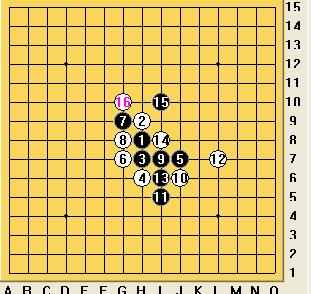
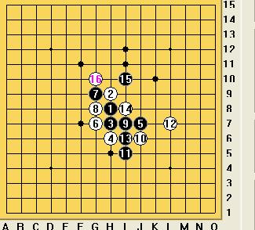
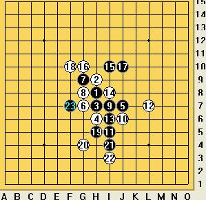
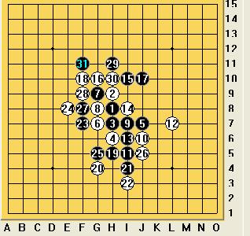
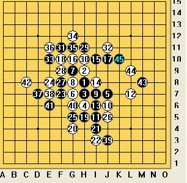
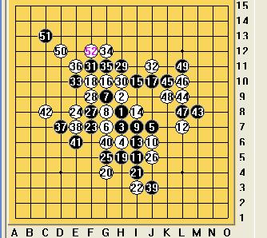

爱五子棋网山口论坛战第二轮分组表【胜出名单确定】
#11 Re:爱五子棋网山口论坛战第二轮分组表【延时者请提供棋谱或棋评哟】 作者：有志青年 发表时间：2009-6-1 16:53:41
因为此特别约定是照顾参加全团赛选手的，所以，还得提个要求：凡是因为参加全团赛而使用了特别约定的，参加完全团赛之后需要在本站提交至少4局对阵棋谱或者不少于500字的棋评以供大家学习！
所以就不奖励威望了，鲜花送上。
参加完论坛战的基本上都会成为贵宾的了（20威望）。
#12 Re:爱五子棋网山口论坛战第二轮分组表【新增积分表】 作者：淡红的秋樱 发表时间：2009-6-4 10:56:46
这次比赛下的很烂，遇到一轮强的，被人秒杀，接下来又一轮弱的，秒杀别人。
第一天，对浙江队。一三台被人用松月同样的变化骗杀。二台开了岚月，非鸟长考后走出另一路变化
杀。四台名月脱谱后伟鬼走漏，没有抓到机会的四台还是挂了。第一轮 被浙江横扫。
第二轮 对北京新月队。我告诉我们的一台，beijingboy网战实战都很强，结果我们的一台也许是太过
于紧张，没有怎么进攻就被白棋虐死了。三台松月弱防，轻松虐死对手。四台对手女棋手名月骗着五
手两打完胜我们。在我们二台的努力下，终于打平拿到半分
第三轮 对北京寒星队。一台对手马世卫缺阵。二台开局疏星轻松取得优势，再最后做杀时被对手冲四
杀掉。三台疏星开局，走入对手的步调，中途黑漏杀。攻崩后白胜。四台依然没什么进展，好像走的
是疏星开局，走的非常的勉强，遇到经验老到的陈磊，早早的败下阵去了。这次拿到了又拿到了半分
。
第四轮遇到了茗弈阁，好像一台是茗弈的，其他都是临时凑来的。三台嘀嘀咕咕的坐满了50分钟还是
缴枪了。终于拿到了一分。
第一天就这样过去了。睡的不是太好，被子厚了些。
第五轮金星队，又是一个弱队。没到20手就必胜了。好像太容易些，没多大功夫就出来玩了。
第六轮 居然遇到火车头了。郁闷，刚才玩大了，也没有去看对阵表，临时想战术似乎有些晚了。就知
道呆呆好像很有名的，从来没有下过。四台李非开的是名月，我猜四台铁定不会，我想为什么四台不
是我呢？开瑞星稳当一点，呆呆走的很快，我长考，还是冒进了。呆呆朝我笑笑，我才发现自己做了
个四四长连，他几步就能秒杀我了。其他两台也不理想，也被扫了。一台黑输的变化，和高飞大师黑
棋完胜的变化几乎差别不大。可是一台在比赛前确没有看到。
第七轮 在输给强队之后，应该是个弱的。不过当时我们猜测弱的似乎不太多。应该有些小强。居然是
台州的小朋友，吃饭后和他们聊了一下，小姑娘很期待对手也是个女的。不过她不能如愿了。台州小
朋友还是下平衡局弱一些。轻松拿到一分。
第八轮 是福建队。实力和我们差不太多。比赛之前我愿意接受和棋的局面。此时的心态就正确多了。
疏星大定式开局，幸亏不是有圈套，我正常应对就能走和，最后对手急了。不过白胜的机会缺大了很
多。虽然我赢了，但还是挽回不了败势。
又一天过去了。对河南队。对手好像也不是很强。应该有机会吧，不过还是没有睡好。
早上起来想看看对手的比赛谱，可是依然没有查到。白白浪费了几个小时的睡觉时间。
到了现场，得知前一轮被上海2队横扫。对手实力不强，似乎能用骗。。。用还是不用呢？
稳健的开了瑞星，交换过去，有些不爽，这几天学了几个黑棋比较强的走法都用不上了，对手黑棋传
统走法，但我知道那个能防住，黑棋机会不大，还是得拼中后盘。我和他的时间交替上升，结果是对
手真的不太强，我又恰巧漏杀了。后面心情大坏。。。随手几步就被人秒杀了。
体力和算力现在都差的不行。结果我们和河南队，一台拼和，二台疏星一打被人做死，三台败，四台
走入我们四台最为熟悉的疏星局面。四台胜。成绩出来，河南队10名，我们名落孙山。都怪我啦。
#13 Re:爱五子棋网山口论坛战第二轮分组表【新增积分表】 作者：梦婷 发表时间：2009-6-12 12:38:57
哈哈 没参加的 不用写吧 嘎嘎#14 Re:爱五子棋网山口论坛战第二轮分组表【新增积分表】 作者：游戏人间 发表时间：2009-6-17 7:05:27
现在的积分都很接近嘛#15 Re:爱五子棋网山口论坛战第二轮分组表【新增积分表】 作者：有志青年 发表时间：2009-6-17 7:53:51
呵呵，第二轮的竞争明显激烈了，难分伯仲现在#16 Re:爱五子棋网山口论坛战第二轮分组表【新增积分表】 作者：茗弈小刀 发表时间：2009-6-22 11:34:39
2009全团顾炜VS曹东
还是没能逃掉，棋评姗姗来迟，大家请见谅。
2009的5月的北京，中国棋院一片热气腾腾，只见炳继“老先生”呼前忙后，头顶上冒着细小汗珠，但“老人家”的嘴笑呵呵的没合过。原来中国2009全团赛正在紧密锣鼓的举行中。比赛场地中，选手们一桌一桌有条不紊的专注对弈着。此时大家看好的顾棋王正与五子神奇王子曹冬交锋着。松月开局，3打。顾老师执黑，感觉3打还是黑稍优的，双方行至16手定型，这也是比较常见的局面：

17手这里有多处选择：

F11的17比较稳妥，封白眠三，但棋王可能觉得太过保守没选择这点。在F7这个点比较常见，但白有强防，比如F10，那么黑就难杀。17在H5先活三，白必档外边，黑再右上做棋拓展K10，也是好手段，但那需要很强大的计算和时间，否则控制不好后边得不偿失。当然黑也可以直接在K10,但18强防I10,后面黑很优，就是杀不出，比较郁闷.17在15上边也是条路，黑优，但由于子力似乎还是较单薄，没有可借靠的地方故不好做杀。棋王经验是相当丰富的，棋力是深厚的，棋风也比较内敛稳沉的，再三权衡之下，选择了J10。

老练而帅气的冬冬18手毫不犹豫档住黑的眠三！21-23由于白左边优势明显，黑跳活3以进攻防守防守。

白左边的优势岂能轻易丢呢？故24防在了上边。25到31手，黑通过交换成功消磨了白左边一些空间.到这里感觉还是黑稍优的。31 ，29.15，17的棋型也是比较危险的。棋王故擒欲纵的棋风又展现出来了。前31手非常不错，可以说冬冬没有占到丝毫便宜。但对手是神奇的冬冬！噶噶，可不能等闲视之！

32尖锐地占住黑的手筋点！黑的优势瞬间化为乌有！老顾惊出一身冷汗，偶的个乖乖，小东子的棋越来越强悍了！大事不好啊！白在左边还有东西，俺还是老实防守搅搅局吧。行至45手，目前局面白稍优，但子力被分散，白考虑用牵制来控制黑棋；黑没什么棋，逼和是上策。
但冬冬却不这么看，嘿，偶的进攻这才开始！

46开始发动攻击，年轻小伙的闯劲展现出来。棋王无奈的反抗挣扎着，51手，败招！冬冬52手准确无误的杀着！
不得不佩服曹冬的攻击线路清晰，大局观明确。全盘的纠缠是亮点。顾老师的51如果防在要点上，还是有希望逼和这棋，可实战人的疲劳状态等都是决定胜负至关重要的因素。事后请教顾老师，他说之所以17手选择J10，因为这一点是作战的关键点，但这是一个很庞大的课题，由于后面是我的作战思路出了问题，故杀法我临时算错了。只能表示遗憾。
在此我们祝曹冬老师今后的棋更好，大家为您喝彩！也祝福我们一直支持爱戴的顾棋王，下次比赛发挥好的状态！我们永远支持您！
（本棋评由慎独写，茗弈小刀修改。）
［ 慎独 于 2009-7-25 14:21:06 时花20金币送鲜花一朵］